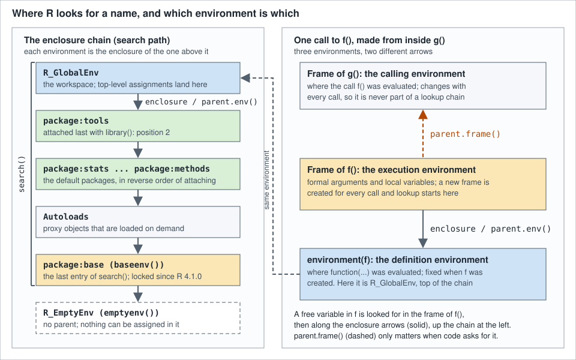

Scoping, Environments and Closures
|
This content was generated with the assistance of AI and should be verified against the official documentation before being relied on in production. |
Checked against R 4.6.1 (2026-06-24) on 2026-10-20; R 4.6.2 is scheduled for 2026-10-29. Almost everything in R that looks like
magic (why a function can use a variable it was never given, why a counter can remember its value between calls, why a
package function keeps working when you define a function with the same name in your workspace, why library() sometimes
prints "the following object is masked") is one mechanism: names are looked up in environments, and environments are linked
into chains. This page explains that mechanism, then builds on it: closures that keep state, the <<- operator, and
environments used as mutable hash maps. It uses only base R and the recommended packages that ship with it (boot
1.3-32, lattice 0.22-9 and codetools 0.2-20), plus one example that loads dplyr 1.2.1 to show the best-known masking message.
Every example below is a complete script that was run with Rscript on R 4.6.1 with warnings printed as they happen
(options(warn = 1)); the lines starting with #> are what it printed, in the order it printed them, and the scripts
pass the default lintr linters. Where an idiom being shown is exactly what a default linter dislikes (<<-, a free
variable that the linter cannot see, an attached data frame) the line carries a # nolint: comment so that the linter
does not hide the lesson. Memory addresses of environments change on every run, so wherever the output would show one it is
replaced by 0x.... The names books, loans, shelf_today, loan_days and the book class come from the
scenario.R file of the running library-shelf scenario described on the
section index; scripts that use them start with source("scenario.R"). Errors and
warnings that the scripts provoke on purpose are caught with tryCatch() so that the script still exits with status 0, and
the message text shown is the real one. The pages
Functions and
Lazy Evaluation and Promises cover the parts of a call that
this page does not (arguments, matching and promises).
Four environments to keep apart
Four different things are called "the environment" in R tutorials, and most confusion about scope comes from mixing them
up. The figure shows them for one call to a function f() that was made from inside another function g().

| Name | What it is | How to get it |
|---|---|---|
Execution environment (the frame of the call) |
A new environment created every time a function is called. It holds the formal arguments and the local variables. |
|
Enclosing environment (the definition environment, "the enclosure") |
The environment where the function was created. It is fixed when the function is created and it is where free variables are looked up after the frame itself. |
|
Calling environment (the "parent frame") |
The frame of the function that made the call, or the workspace for a call made at the top level. It is different for every call and it is not used to look up free variables. |
|
Search path |
The enclosures of the workspace: the attached packages, |
|
The R FAQ says exactly this about the first two: inside a function you may want to reach two additional environments, the
one the function was defined in ("enclosing") and the one it was invoked in ("parent"), and the enclosing environment is
fixed at creation while the parent environment is defined at every invocation
(R FAQ 7.12). The help page
for environment adds a warning about vocabulary: because the confusion is so easy it is best never to say "parent" about
an environment, despite the name of the function parent.env()
(R documentation: environment). This page follows that advice: it says
enclosure for what parent.env() returns and calling environment or parent frame for what parent.frame() returns.
Environments are objects
Frames and enclosures
The R Language Definition describes an environment as two things: a frame, which is a set of symbol-value pairs, and an
enclosure, which is a pointer to another environment. When R looks up the value of a symbol it examines the frame, and if
the symbol is not there it follows the enclosure and repeats. Environments therefore form a tree in which the enclosures play
the role of parents, rooted in the empty environment emptyenv(), which has no parent and is the direct enclosure of the base
environment baseenv()
(R-lang: Environments).
The manual’s section on the scope of variables starts from the workspace: the global environment is the root of the user workspace, an assignment from the command line makes the object belong to it, and its enclosing environment is the next environment on the search path, "and so on back to the empty environment that is the enclosure of the base environment" (R-lang: Scope of variables, R-lang: Global environment).
The same manual is careful about the words in the section on the lexical environment: a frame is a set of variables, an
environment is a nesting of frames, or equivalently the innermost frame plus the enclosing environment
(R-lang: Lexical environment). In everyday
code the two words are used loosely; ls(env) lists the frame, and parent.env(env) follows the enclosure.
Environments are created in two ways. Every call to a function creates one, containing the arguments and the local
variables, with the environment of the called closure as its enclosure. And new.env() creates one directly. They are
objects like any other (typeof() and class() say "environment"), but unlike most R objects they are not copied when
they are assigned or passed to a function: if you assign the same environment to several names and change one, the others
change too (R-lang: Environments). Environments are the main exception to the copy-on-modify behaviour of R values, and section
Environments as mutable hash maps uses that on purpose.
Creating and finding environments
| Function | What it does |
|---|---|
|
Creates an empty environment. |
|
The environment of a function or formula, or the current evaluation environment when |
|
Replaces the enclosure of a closure (a primitive function has no environment). |
|
The workspace, the first item on the search path. Its enclosure is the next item on the search path. |
|
The environment of the base package, and the namespace environment of the base package. Both print as |
|
The root of every chain. Nothing can be assigned into it. |
|
The first top-level environment found from |
|
The enclosure of |
|
The name of a system environment ( |
|
Convert a search-path position, a name or a list into an environment, or fill an environment from a list. |
|
Test whether an object is an environment. |
|
Size and chain lengths of a hashed environment ( |
|
The environments of the active calls, and the number of the current one (see The call stack versus the enclosing environment). |
Source: R documentation: environment
The first script prints the named environments, creates one and asks where a function from a package lives. The printed
form of an environment is <environment: R_GlobalEnv> for the named ones and <environment: 0x...>, with an address, for the
rest.
# The environments you meet first have names.
globalenv()
#> <environment: R_GlobalEnv>
emptyenv()
#> <environment: R_EmptyEnv>
baseenv()
#> <environment: base>
topenv()
#> <environment: R_GlobalEnv>
environmentName(globalenv())
#> [1] "R_GlobalEnv"
environmentName(baseenv())
#> [1] "base"
environmentName(emptyenv())
#> [1] "R_EmptyEnv"
# new.env() makes an empty environment; its enclosure defaults to the caller.
desk <- new.env()
desk
#> <environment: 0x...>
class(desk)
#> [1] "environment"
is.environment(desk)
#> [1] TRUE
environmentName(desk)
#> [1] ""
identical(parent.env(desk), globalenv())
#> [1] TRUE
# A function remembers the environment where it was created.
environment(sd)
#> <environment: namespace:stats>
environmentName(environment(sd))
#> [1] "stats"
environment(function() NULL)
#> <environment: R_GlobalEnv>
environment(sum)
#> NULLSource: R documentation: environment
topenv() reports the workspace here because the script runs at the top level. desk is an anonymous environment with no
name, and its enclosure is the workspace because new.env() takes its default parent from parent.frame(), the frame
of whoever called it. A function from a package such as sd() has the namespace of its package as its environment
(<environment: namespace:stats>), not the workspace, and a primitive function such as sum() has no environment at all
(environment(sum) is NULL). The next sections explain why that matters.
Following the chain
The tree of environments is a set of chains, and a short loop with parent.env() walks one. The helper below stops at the
empty environment, because parent.env(emptyenv()) is an error, not NULL.
# Follow the enclosures until the empty environment, which has no parent.
env_chain <- function(env) {
out <- character()
while (!identical(env, emptyenv())) {
out <- c(out, environmentName(env))
env <- parent.env(env)
}
out
}
env_chain(globalenv())
#> [1] "R_GlobalEnv" "package:stats" "package:graphics"
#> [4] "package:grDevices" "package:utils" "package:datasets"
#> [7] "package:methods" "Autoloads" "base"
env_chain(environment(sd))
#> [1] "stats" "imports:stats" "base"
#> [4] "R_GlobalEnv" "package:stats" "package:graphics"
#> [7] "package:grDevices" "package:utils" "package:datasets"
#> [10] "package:methods" "Autoloads" "base"
# The frame of a call to a function defined at the top level has no name.
make_frame <- function() environment()
env_chain(make_frame())
#> [1] "" "R_GlobalEnv" "package:stats"
#> [4] "package:graphics" "package:grDevices" "package:utils"
#> [7] "package:datasets" "package:methods" "Autoloads"
#> [10] "base"
# parent.env() of the empty environment is an error, not NULL.
tryCatch(
parent.env(emptyenv()),
error = function(e) conditionMessage(e)
)
#> [1] "the empty environment has no parent"The first chain is the search path: the workspace, the default packages, Autoloads, and the base environment. The
second is the chain of a function from a package: its own namespace, then the imports of the package, then the base
namespace, then the workspace and the rest of the search path. That order is the reason a package keeps working when your
workspace masks a base function, and it is explained in the section on namespaces below. The third chain is the one of a
function frame: the frame has no name, and its enclosure is the workspace because the function was created there.
Converting to and from environments
as.environment() accepts a position on the search path (1 is the workspace, 2 is the first attached package, and so on),
the name of an entry of search(), or a list, which becomes the frame of a new environment whose enclosure is the empty
environment. list2env() fills an existing environment from a named list, and as.list() goes the other way. At the top
level there are no function calls, so the call-stack functions have nothing to report.
# as.environment() turns positions, names and lists into environments.
environmentName(as.environment(1))
#> [1] "R_GlobalEnv"
environmentName(as.environment("package:stats"))
#> [1] "package:stats"
environmentName(as.environment(2))
#> [1] "package:stats"
settings <- as.environment(list(loan_days = 14L, renewals = 2L))
sort(ls(settings))
#> [1] "loan_days" "renewals"
settings$loan_days
#> [1] 14
# list2env() fills an existing (or new) environment from a list.
desk <- list2env(list(open = TRUE, staff = 3L), envir = new.env())
mget(c("open", "staff"), envir = desk)
#> $open
#> [1] TRUE
#>
#> $staff
#> [1] 3
#>
# No function frames exist at the top level.
sys.nframe()
#> [1] 0
sys.frames()
#> NULL
sys.call()
#> NULLSource: R documentation: as.environment
Environments of functions
A closure (a function written in R) carries its defining environment as part of its definition; environment(f) returns it
and environment(f) <- value replaces it. The manual says that when the function is subsequently called, its
evaluation environment is created with the closure’s environment as the enclosure, and that this is "not necessarily the
environment of the caller" (R-lang: Lexical environment). Primitive functions and operators written in C have no
environment.
# Closures have an environment, primitives do not.
is.primitive(sum)
#> [1] TRUE
environment(sum)
#> NULL
is.primitive(sd)
#> [1] FALSE
environment(sd)
#> <environment: namespace:stats>
# environment<-() replaces the enclosure of a closure.
fine_per_day <- 0.25
fine <- function(days) days * fine_per_day
fine(8)
#> [1] 2
rates <- new.env()
rates$fine_per_day <- 1
environment(fine) <- rates
fine(8)
#> [1] 8
environmentName(environment(fine))
#> [1] ""
identical(environment(fine), rates)
#> [1] TRUE
# Inside a call, environment() is the frame, parent.env() of the frame is
# the enclosure and sys.function() is the function itself.
describe <- function() {
me <- sys.function()
list(
enclosure = identical(parent.env(environment()), environment(me)),
same_function = identical(me, describe)
)
}
str(describe())
#> List of 2
#> $ enclosure : logi TRUE
#> $ same_function: logi TRUE
# Setting the environment of a primitive warns and does nothing.
tryCatch(
environment(sum) <- globalenv(),
warning = function(w) conditionMessage(w)
)
#> [1] "setting environment(<primitive function>) is not possible and trying it is deprecated"Source: R documentation: environment
After environment(fine) <- rates the same function body finds a different fine_per_day, which shows that a function and its
environment are two objects that happen to be stored together. Replacing the environment of a primitive function is no longer
done: since R 4.5.0 it signals a warning and changes nothing (R NEWS, "Changes in R 4.5.0"; the help page calls the attempt
deprecated), and the script catches the warning. Inside
a call, sys.function() is the function being run, environment() is its frame, and the enclosure of the frame is the
environment of that function.
Lexical scoping and name lookup
Parameters, local variables and free variables
An Introduction to R divides the symbols in the body of a function into three classes: formal parameters, which are the names in the argument list; local variables, whose values come from evaluating expressions in the body; and free variables, which are neither. Free variables become local variables if they are assigned to. R resolves a free variable by first looking in the environment in which the function was created, which is called lexical scope (R-intro: Scope). The R FAQ states the same rule as the first difference between R and the original S, whose free variables came from a set of global variables, as in C, with only a local and a global scope (R FAQ 3.3.1: Lexical scoping). Lexical scoping is analogous to the evaluation model of Scheme, and it is what makes closures useful.
Every name in a function body is looked up, including the names of functions. In the script below loan_days is a free
variable, but so are -, {, <-, as.integer and max: codetools::findGlobals() lists them, and
all of them except loan_days are found in the base environment at the end of the chain. The linter cannot see the variable that
source("scenario.R") created, which is why that line carries a # nolint, and it is the same lookup that
R CMD check and lintr use to warn about "no visible binding for global variable".
source("scenario.R")
# Formal parameters, local variables and free variables: every name in the
# body that is neither is looked up where the function was defined.
days_overdue <- function(loan_date, return_date) {
days_out <- as.integer(return_date - loan_date)
max(days_out - loan_days, 0L) # nolint: object_usage_linter.
}
days_overdue(as.Date("2026-05-01"), as.Date("2026-06-01"))
#> [1] 10
codetools::findGlobals(days_overdue)
#> [1] "-" "{" "<-" "as.integer" "loan_days"
#> [6] "max"
# A nested function sees the variables of the function that contains it,
# not the global ones: this is lexical scope.
due_in <- function(loan_days) {
remaining <- function(days_out) loan_days - days_out
remaining(5L)
}
due_in(14L)
#> [1] 9
loan_days
#> [1] 21
# A free variable becomes local when it is assigned to, but the right-hand
# side is evaluated first, so it still reads the global value.
extended_loan <- function() {
loan_days <- loan_days + 7L
loan_days
}
extended_loan()
#> [1] 28
loan_days
#> [1] 21due_in() is the same argument as the cube() and sq() example in R-intro and in R FAQ 3.3.1. The inner function
remaining() has a free variable loan_days. Under the scoping rules of the original S, a free variable was looked up among
the global variables, so remaining() would read the global 21 and return 16. In R the variable is found in the frame of
the call to due_in(), because that is where remaining() was created, and the result is 9. The third example shows the
sentence "free variables become local variables if they are assigned to": the right-hand side loan_days + 7L is evaluated
first and reads the global value, then the assignment creates a local variable of the same name; the global one is
untouched.
The R manual puts the whole rule in one paragraph. When a variable is requested inside a function it is first sought in the
evaluation environment, then in the enclosure, the enclosure of the enclosure, and so on; once the workspace or the
environment of a package is reached the search continues up the search path to the environment of the base package, and if
the variable is not found there the search proceeds to the empty environment and fails
(R-lang: Lexical environment). The failure
is the error object 'x' not found, shown with the other messages in Common errors and warnings.
A function name is looked up as a function
When a name is used in the position of a function, R skips bindings that are not functions. That is why c <- 3 followed
by c(1, 2) still works, and why a variable called nchar, sum or data does not break the calls of the function of the same
name. The C interface documents the same rule: Rf_findFun does the lookup and "restricts the search to functions"
(R-exts: Evaluating R expressions from C).
In R code, the mode argument of get() and exists() expresses the same decision.
source("scenario.R")
# When a name is used as a function, bindings that are not functions are
# skipped.
nchar <- 2L
nchar
#> [1] 2
nchar(trimws(books$title[[1L]]))
#> [1] 16
# get() and exists() take the same decision from their mode argument.
get("nchar")
#> [1] 2
class(get("nchar", mode = "function"))
#> [1] "function"
exists("nchar", mode = "function")
#> [1] TRUE
exists("loan_days", mode = "function")
#> [1] FALSE
rm(nchar)
# A variable that is used as a value is not skipped.
sum <- function(...) "a function named sum"
tryCatch(
sum + 1,
error = function(e) conditionMessage(e)
)
#> [1] "non-numeric argument to binary operator"
rm(sum)Source: R documentation: get
The reverse is not true: a name used as a value finds the first binding of any kind. The sum + 1 line fails with the
message of arithmetic on a function, not with "object not found", because sum was found (it was the function defined
in the script, which hides the one in base). Naming data after functions (c, t, df, data, sum) is legal and
works most of the time, but it makes both reading and debugging harder, and conflicts() finds such cases
(see Masking).
Looking up by name: get(), exists(), mget() and dynGet()
Scoping happens when code mentions a name. The functions below do the same lookup with a name held in a string, and let
you choose the environment to start from. get(x, envir, mode, inherits = TRUE) returns the object or signals an error,
exists() returns whether it was found, get0(x, envir, mode, inherits, ifnotfound) does both in one call, and mget()
looks up a character vector of names and returns a named list, with inherits = FALSE by default
(R documentation: get). The inherits argument says whether the
enclosures of envir are searched too; with inherits = FALSE only the frame of envir is examined.
The pos argument selects the environment by position on the search path, by name or by environment, and envir is
an alternative way to do the same. By default both mean the environment of the call to get(), which is the frame of the
function that called it.
source("scenario.R")
# get() and exists() search by name, starting in the current environment.
exists("loan_days")
#> [1] TRUE
nm <- "loan_days"
get(nm)
#> [1] 21
exists("no_such_name")
#> [1] FALSE
get0("no_such_name", ifnotfound = NA)
#> [1] NA
# envir selects where to start, inherits says whether to follow enclosures.
desk <- new.env()
assign("loan_days", 7L, envir = desk)
get("loan_days", envir = desk)
#> [1] 7
exists("shelf_today", envir = desk)
#> [1] TRUE
exists("shelf_today", envir = desk, inherits = FALSE)
#> [1] FALSE
# mget() looks up several names and returns a named list.
mget(c("loan_days", "shelf_today"))
#> $loan_days
#> [1] 21
#>
#> $shelf_today
#> [1] "2026-06-30"
#>
mget(c("loan_days", "late_fee"), ifnotfound = list(NA))
#> $loan_days
#> [1] 21
#>
#> $late_fee
#> [1] NA
#>
# dynGet() looks in the callers instead of the enclosures.
count_open <- function() dynGet("pending", ifnotfound = 0L)
checkout_run <- function() {
pending <- 4L # nolint: object_usage_linter.
count_open()
}
checkout_run()
#> [1] 4
count_open()
#> [1] 0Source: R documentation: get
The exists("shelf_today", envir = desk) call is TRUE because desk has the workspace as its enclosure and
inherits = TRUE follows it, while with inherits = FALSE the answer is FALSE: the same difference as between lexical
lookup and a lookup of the frame alone. dynGet() is the other direction: it looks for an object in the frames of the
callers, which is dynamic scope. The help page says it is "somewhat experimental" and to be used with caution, and the
next section explains why dynamic scope is not R’s default.
assign(x, value, pos, envir, inherits = FALSE) is the inverse of get(). With the default inherits = FALSE it assigns in
the frame of envir; with inherits = TRUE it searches the enclosures for an existing binding and assigns there, or in the
workspace if there is none, which is what <<- does
(R documentation: assign).
The search path
search(), searchpaths() and library()
In addition to the environments of function calls, R has a search path of environments that are searched for names not found
elsewhere. It is used for two things: packages of functions, and attached user data. The first element is the workspace
and the last is the base package; an Autoloads environment holds proxy objects that may be loaded on demand; other
environments are inserted with attach() or library()
(R-lang: Search path). On the search path each item’s
enclosure is the next item, so search() is simply the chain of enclosures that starts at the workspace.
searchpaths() returns the same entries with the file-system path from which each package was loaded; the script prints
only the final part of each path because the full paths depend on the machine.
# The search path: the workspace first, base last. Each entry is the
# enclosure of the one before it.
search()
#> [1] ".GlobalEnv" "package:stats" "package:graphics"
#> [4] "package:grDevices" "package:utils" "package:datasets"
#> [7] "package:methods" "Autoloads" "package:base"
basename(searchpaths())
#> [1] ".GlobalEnv" "stats" "graphics" "grDevices" "utils"
#> [6] "datasets" "methods" "Autoloads" "base"
environmentName(parent.env(globalenv()))
#> [1] "package:stats"
environmentName(as.environment(2))
#> [1] "package:stats"
# library() attaches a package at position 2, just after the workspace.
library(tools)
search()[1:3]
#> [1] ".GlobalEnv" "package:tools" "package:stats"
environmentName(parent.env(globalenv()))
#> [1] "package:tools"
"package:tools" %in% search()
#> [1] TRUE
# detach() removes it again; the namespace stays loaded.
detach("package:tools")
"package:tools" %in% search()
#> [1] FALSE
isNamespaceLoaded("tools")
#> [1] TRUE
# Names found on the search path but not in the workspace.
exists("toTitleCase")
#> [1] FALSE
tools::toTitleCase("the quiet streets")
#> [1] "The Quiet Streets"
find("sd")
#> [1] "package:stats"Source: R documentation: search
library(tools) inserted package:tools at position 2, directly after the workspace, and that changed the enclosure of the
workspace: parent.env(globalenv()) was package:stats before and package:tools after. detach() removes the entry from
the path and leaves the namespace loaded (isNamespaceLoaded("tools") stays TRUE), which is also why detaching and
re-attaching a package is not a reliable way to refresh it: the help page for
detach says that the most reliable way to completely detach a package is
to restart R. The pos argument of library() chooses another position, and
library(mypkg, pos = "package:base") is the documented way to mask as little as possible
(R documentation: library). The page
Sessions, Workspaces and Startup shows the search path of a
fresh session and how R_DEFAULT_PACKAGES changes it, and
Packages, Libraries and Namespaces covers libraries,
library() against require() and requireNamespace().
Masking
When two entries of the search path contain the same name, the one that comes first on the path wins and the other is
masked. A package attached later is inserted in front of the earlier ones, so it masks them, and anything in the workspace
masks every package, because the workspace is first. library() reports a clash when it attaches a package; the report is
printed as a message, not as a warning, even though the argument that controls it is called warn.conflicts
(R documentation: library). conflicts() lists the masked
objects and conflicts(detail = TRUE) the places that mask them, and find() shows every entry of the search path that
holds a given name
(R documentation: conflicts).
In this installation none of the recommended packages of R masks stats or base, but two of them clash with each other: both
boot and lattice have an object called melanoma, so attaching them in that order produces the real message.
# Attaching a package whose exports clash with an earlier one prints a
# message and the later package wins.
library(boot)
library(lattice)
#>
#> Attaching package: ‘lattice’
#>
#> The following object is masked from ‘package:boot’:
#>
#> melanoma
#>
search()[1:4]
#> [1] ".GlobalEnv" "package:lattice" "package:boot" "package:stats"
find("melanoma")
#> [1] "package:lattice" "package:boot"
conflicts(detail = TRUE)[["package:boot"]]
#> [1] "melanoma"
detach("package:lattice")
detach("package:boot")
# Anything in the workspace masks every package, without a message.
sd <- function(x) "my sd"
sd(1:3)
#> [1] "my sd"
find("sd")
#> [1] ".GlobalEnv" "package:stats"
stats::sd(c(1, 2, 3, 4))
#> [1] 1.290994
rm(sd)
sd(c(1, 2, 3, 4))
#> [1] 1.290994Source: R documentation: library
The message names the package that is masked and the object (The following object is masked from 'package:boot':,
printed with typographic quotes in a UTF-8 session) and find("melanoma") confirms that lattice is first. A definition made in the
workspace masks silently, because nothing is being attached. The message appears the other way round, when a package or a
database is attached while the workspace already holds an object of the same name, and then it says that the object is masked
by .GlobalEnv (the attach() example in attach() and the older habits it came from prints that form).
stats::sd() reaches the original whatever is masking it.
The best-known form of the message involves stats, because dplyr defines filter() and lag(), and base, because it
defines intersect(), setdiff(), setequal() and union(). This script needs dplyr, 1.2.1 here, which is not part of base R.
# The best known masking message, from dplyr 1.2.1.
library(dplyr)
#>
#> Attaching package: ‘dplyr’
#>
#> The following objects are masked from ‘package:stats’:
#>
#> filter, lag
#>
#> The following objects are masked from ‘package:base’:
#>
#> intersect, setdiff, setequal, union
#>
search()[1:3]
#> [1] ".GlobalEnv" "package:dplyr" "package:stats"
find("filter")
#> [1] "package:dplyr" "package:stats"
# The unqualified name now reaches dplyr first; :: still reaches stats.
environmentName(environment(filter))
#> [1] "dplyr"
environmentName(environment(stats::filter))
#> [1] "stats"
detach("package:dplyr")
find("filter")
#> [1] "package:stats"The same-name function in stats is still reachable, as stats::filter(), and in the other direction the attached package
is reachable with dplyr::filter() whether or not it is attached. Code in a script is clearer, and safer against a later
library() call that masks something, when it qualifies the names of functions that clash. For the packages that do have
to be attached, library() can resolve the clash at the moment of attaching.
# library() can resolve a conflict instead of just reporting it.
library(boot)
library(lattice, exclude = "melanoma")
find("melanoma")
#> [1] "package:boot"
detach("package:lattice")
library(lattice, include.only = "xyplot")
find("melanoma")
#> [1] "package:boot"
exists("densityplot")
#> [1] FALSE
detach("package:lattice")
# With conflicts.policy = "strict" an unresolved conflict is an error.
old <- options(conflicts.policy = "strict")
tryCatch(
library(lattice),
error = function(e) cat(conditionMessage(e), "\n")
)
#> Conflicts attaching package ‘lattice’:
#>
#> The following object is masked from ‘package:boot’:
#>
#> melanoma
#>
tryCatch(
library(lattice, mask.ok = "melanoma"),
error = function(e) cat(conditionMessage(e), "\n")
)
find("melanoma")
#> [1] "package:lattice" "package:boot"
options(old)
detach("package:lattice")
detach("package:boot")Source: R documentation: library
exclude drops names from the attach, include.only attaches only the names given, and mask.ok declares that masking
particular names is expected. Setting the option conflicts.policy to "strict" turns every unresolved conflict into an
error, with the message printed above, and "depends.ok" exempts conflicts with declared dependencies. These arguments and
the option are described under "Conflicts" in the help page of library; the warn.conflicts = FALSE argument only silences the
message and resolves nothing.
What the search path does not decide
Two details avoid surprises. First, since R 4.0.0 S3 method lookup by default skips the elements of the search path between the workspace and the base environment (R NEWS, "Changes in R 4.0.0"), so an S3 method that a package merely exports, without registering it, is no longer found through the search path. Methods and registration are covered on S3 Classes and Generics. Second, the search path is the tail of the chain only for code created in the workspace. Code inside a package namespace reaches the workspace and the search path last, as the next section shows.
Namespaces
A package that has a namespace has a different search path. The R Language Definition says that when a search for an object starts from an object in such a package, the package itself is searched first, then its imports, then the base namespace, and finally the workspace and the rest of the regular search path. The effect is that references to other objects in the same package are resolved to the package, and objects cannot be masked by objects of the same name in the workspace or in other packages (R-lang: Search path).
A namespace is just an environment whose enclosure is a second environment (the imports:<pkg> environment) whose enclosure is the
base namespace, whose enclosure is the workspace. asNamespace(ns) and getNamespace(ns) return it, loading the package
if needed, :: reads an exported object, ::: reads any object of the namespace, getNamespaceExports() lists the exported
names, and topenv() finds the namespace that a function belongs to
(R documentation: ::,
R documentation: topenv,
R documentation: ns-reflect).
# A function from a package is evaluated in the package's namespace.
ns <- asNamespace("stats")
identical(ns, getNamespace("stats"))
#> [1] TRUE
identical(ns, environment(sd))
#> [1] TRUE
environmentName(ns)
#> [1] "stats"
# namespace -> imports -> base namespace -> workspace -> search path
env_chain <- function(env) {
out <- character()
while (!identical(env, emptyenv())) {
out <- c(out, environmentName(env))
env <- parent.env(env)
}
out
}
env_chain(ns)[1:5]
#> [1] "stats" "imports:stats" "base" "R_GlobalEnv"
#> [5] "package:stats"
# A workspace definition does not change what the package's code finds,
# because the base namespace comes before the workspace.
sqrt <- function(x) stop("the workspace sqrt was called")
sd(c(1, 2, 3, 4))
#> [1] 1.290994
rm(sqrt)
# :: reads an exported object, ::: any object of the namespace.
"toTitleCase" %in% getNamespaceExports("tools")
#> [1] TRUE
is.function(tools::toTitleCase)
#> [1] TRUE
is.function(tools:::.check_packages)
#> [1] TRUE
topenv(environment(tools::toTitleCase))
#> <environment: namespace:tools>The workspace sqrt() that stops with an error never runs: sd() calls sqrt() from inside the stats namespace, where
the lookup finds sqrt() in the base namespace before it reaches the workspace. In package code this is what keeps
library() order and your own scripts from changing what a package does. The namespace environments of packages are locked
when they are loaded, and since R 4.1.0 the base environment and its namespace are locked too (R NEWS, "Changes in R
4.1.0"), so nothing can be added to or removed from them (R documentation: lockBinding).
::: is for inspecting and debugging: an unexported function is not part of the public interface of a package, and R CMD check
reports ::: calls to other packages in package code. Namespace files, importFrom(), Imports against Depends, and the order of loading and attaching are the topic of
Packages, Libraries and Namespaces.
The call stack versus the enclosing environment
The call stack
Every time a function is invoked a new evaluation frame is created, and a "context" is placed on a list of contexts, the call stack; when the function finishes, its context is removed. The environments of the currently active calls are accessible through the call stack, and making variables defined higher up the stack available is called dynamic scope: the binding for a variable is the most recent one in time. The manual says that this contradicts the default scoping rules of R, which use the bindings in the environment where the function was defined, and that some functions, particularly those that use and manipulate model formulas, need to simulate dynamic scope by accessing the call stack directly (R-lang: The call stack).
Access to the stack is provided by the family of functions whose names start with sys., plus parent.frame():
| Function | What it returns |
|---|---|
|
The call of the specified context, for example |
|
The function being run in that context. |
|
The environment (frame) of that context. Frame 0 is the workspace. |
|
The number of the current frame: 0 at the top level, 1 in a function called from the top level. |
|
The number of the frame of the caller ( |
|
The calls, the frames and the parent numbers of all active contexts. |
|
A list with |
|
The expression stored by |
|
Shorthand for |
Source: R documentation: sys.parent
# Every call pushes a frame; sys.* functions look at the stack.
checkout <- function(isbn) validate(isbn)
validate <- function(isbn) report()
report <- function() {
cat("frame number:", sys.nframe(), "\n")
cat("this call: ", deparse(sys.call()), "\n")
cat("caller: ", deparse(sys.call(-1)), "\n")
cat("all calls: ", vapply(sys.calls(), deparse, ""), sep = "\n ")
cat("parents: ", sys.parents(), "\n")
cat("frames: ", length(sys.frames()), "\n")
cat("my function: ", class(sys.function()), "\n")
invisible(NULL)
}
checkout("9780306406157")
#> frame number: 3
#> this call: report()
#> caller: validate(isbn)
#> all calls:
#> checkout("9780306406157")
#> validate(isbn)
#> report()
#> parents: 0 1 2
#> frames: 3
#> my function: function
# parent.frame() is shorthand for sys.frame(sys.parent()).
whoami <- function() {
identical(parent.frame(), sys.frame(sys.parent()))
}
whoami()
#> [1] TRUE
# At the top level the parent frame is the workspace.
identical(parent.frame(), globalenv())
#> [1] TRUE
# The parent frame is the frame of whoever called, wherever the function
# was defined; the enclosure is fixed when the function is created.
is_called_from <- function(frame) identical(parent.frame(), frame)
caller <- function() is_called_from(environment())
caller()
#> [1] TRUE
is_called_from(globalenv())
#> [1] TRUE
is_called_from(new.env())
#> [1] FALSESource: R documentation: sys.parent
The frame number of report() is 3 because checkout() is frame 1, validate() frame 2, and the workspace is frame 0.
sys.parents() lists the parent of each frame (0 for checkout(), because it was called from the workspace). parent.frame()
at the top level is the workspace, and in is_called_from() it is whatever frame the call was made in, wherever the
function was defined. Three cautions are in the help page. sys.parent() and parent.frame() refer to the context of the
parent interpreted function, so internal functions (which may or may not set contexts) may not be counted, and S3 methods
can do surprising things. As a consequence of lazy evaluation these functions look at the stack at the time they are
evaluated, not at the time they are called, so passing a call to them as an argument is "unlikely to be a good idea". And the
sys. functions are themselves not counted in the stack, so they never report their own context.
The classic demonstration
The difference between the enclosure and the calling environment is where lexical scope and dynamic scope part ways, and
a function called from inside another function shows it. is_overdue() is defined at the top level, so its
enclosure is the workspace. Whatever variable named loan_days exists in the function that calls it, it still reads the one
in the workspace.
source("scenario.R")
# is_overdue() is defined at the top level, so its enclosure is the workspace.
is_overdue <- function(days_out) {
days_out > loan_days # nolint: object_usage_linter.
}
at_the_desk <- function() {
loan_days <- 7L # nolint: object_usage_linter.
is_overdue(10L)
}
at_the_desk()
#> [1] FALSE
is_overdue(10L)
#> [1] FALSE
# A function that wants the caller's variable has to ask for it explicitly.
is_overdue_here <- function(days_out) {
days_out > get("loan_days", envir = parent.frame())
}
at_the_desk_2 <- function() {
loan_days <- 7L # nolint: object_usage_linter.
is_overdue_here(10L)
}
at_the_desk_2()
#> [1] TRUE
# Fixing the enclosure after the fact: a function and its definition
# environment are two objects.
at_the_desk_3 <- function() {
loan_days <- 7L # nolint: object_usage_linter.
fn <- is_overdue
environment(fn) <- environment()
fn(10L)
}
at_the_desk_3()
#> [1] TRUE
is_overdue(10L)
#> [1] FALSEIn at_the_desk() the call is_overdue(10L) returns FALSE, because 10 days out is not more than the global 21. Under
dynamic scope the function would have found the loan_days <- 7L of its caller and answered TRUE. When a function really
wants the caller’s variable, as model-fitting functions want the variables of a formula, it has to ask for it explicitly with
parent.frame(), as is_overdue_here() does. The third example changes the enclosure itself with environment(fn) <- ...,
which is the lexical way to give one function a different view of its free variables.
R FAQ 7.12 explains why both exist. Enclosing environments matter because a function can use the variables in its enclosure to share information with other functions or with other invocations of itself; this relies on the enclosing environment being the same each time the function is called (in C that would be done with static variables). Parent environments matter because things like model formulae need to be evaluated in the environment the function was called from, since that is where the variables will be available, and that relies on the parent environment being potentially different with each call. It also gives a way to say the difference between R and S: in S the enclosing environment is always the workspace, and in R it is wherever the function was created.
When code should use parent.frame()
Most functions never touch parent.frame(). It appears in three places, which are the ones to recognise when reading code.
-
Functions that evaluate user-supplied expressions or formulas in the caller’s context, such as
with(),subset(),transform()andlm(). The help page ofevalnotes that when evaluating expressions in a data frame that was passed as an argument, the relevant enclosure is often the caller’s environment, so one needseval(x, data, parent.frame())(R documentation: eval). This is the topic of Evaluation and Non-Standard Evaluation. -
Functions that create variables in their caller on purpose, with
assign(name, value, envir = parent.frame()). This is legitimate in a small set of tools (loaders, tracers) and a source of hidden side effects everywhere else. -
Default arguments such as
new.env(parent = parent.frame()), which is hownew.env()gets its default enclosure. The default expression is evaluated in the frame of the function being called, soparent.frame()there means the caller of that function (the help page ofsys.parentstates that these functions count frames from the evaluation of the called function when they supply default values).
Whenever a function takes an envir or where argument whose default is parent.frame(), it is following the convention that
the caller’s frame is the place to work in, and tests that pass an explicit environment avoid touching the real workspace.
Closures
A function that remembers
A closure is a function together with the environment in which it was created. Because the environment is part of the function,
variables of that environment stay alive as long as the function does, and every call to the function can read and change
them. R-intro puts it as "lexical scope can also be used to give functions mutable state" and builds a bank account out of three
functions created inside open.account(): deposit, withdraw and balance, all of which see the variable total of the
call that created them (R-intro: Scope). The same
design in the library-shelf scenario is a loan desk: make_loan_desk() returns three functions that share the lists of
ISBNs and due dates created inside the call, and each desk made by the factory has its own.
source("scenario.R")
# A closure is a function plus the environment it was created in. This desk
# keeps its state in that environment, like the bank account of R-intro.
make_loan_desk <- function(days = loan_days) { # nolint: object_usage_linter.
out <- character()
due <- as.Date(character())
lend <- function(isbn, on) {
out <<- c(out, isbn) # nolint: assignment_linter.
due <<- c(due, on + days) # nolint: assignment_linter.
invisible(length(out))
}
give_back <- function(isbn) {
keep <- out != isbn
due <<- due[keep] # nolint: assignment_linter.
out <<- out[keep] # nolint: assignment_linter.
invisible(length(out))
}
outstanding <- function() data.frame(isbn = out, due = due)
list(lend = lend, give_back = give_back, outstanding = outstanding)
}
main_desk <- make_loan_desk()
kids_desk <- make_loan_desk(days = 7L)
main_desk$lend("9780306406157", shelf_today)
main_desk$lend("9780470059029", shelf_today)
kids_desk$lend("9780306406157", shelf_today)
main_desk$outstanding()
#> isbn due
#> 1 9780306406157 2026-07-21
#> 2 9780470059029 2026-07-21
kids_desk$outstanding()
#> isbn due
#> 1 9780306406157 2026-07-07
main_desk$give_back("9780306406157")
main_desk$outstanding()
#> isbn due
#> 1 9780470059029 2026-07-21
nrow(kids_desk$outstanding())
#> [1] 1
# The state is in the enclosing environment of the three functions.
lend_env <- environment(main_desk$lend)
identical(lend_env, environment(main_desk$give_back))
#> [1] TRUE
identical(lend_env, environment(kids_desk$lend))
#> [1] FALSE
sort(ls(lend_env))
#> [1] "days" "due" "give_back" "lend" "out"
#> [6] "outstanding"
lend_env$days
#> [1] 21
environment(kids_desk$lend)$days
#> [1] 7Source: An Introduction to R: Scope
The two desks do not share anything: the book lent at kids_desk is due on 2026-07-07 because that desk was created with
days = 7L, and giving a book back at main_desk does not change kids_desk. The state lives in one environment per call of
make_loan_desk(), which is the enclosure of lend(), give_back() and outstanding(); ls() on it shows the three
functions, the two state variables and the argument days. Because it is an ordinary environment, it can be inspected from
outside, as the last lines do. That is useful when debugging and it also shows the weakness of the technique: there is
nothing private about a closure’s environment.
The factory make_loan_desk() is a function factory, a function whose value is a function. The page
Function Factories and Higher-Order Functions
treats the patterns built on that: generators, decorators, memoisation and partial application. When state and several operations have to be
bundled with methods and inheritance, the closure approach scales into the Reference Classes and R6 classes of
Reference Classes and R6, which are environments with a class attribute.
What a closure keeps alive
A closure keeps its whole creation environment, not only the variables it mentions. Anything created in the factory before it returns stays reachable, which can keep a large table in memory for as long as the function exists, and the arguments of the factory are promises (see Lazy Evaluation and Promises), so a factory whose argument is a variable that changes later may capture the later value unless the argument is forced.
# A closure keeps the whole environment of its creation alive, not only the
# variables it mentions.
make_checker <- function(max_days) {
scratch <- rep(0, 1000) # nolint: object_usage_linter.
function(days_out) days_out > max_days
}
sort(ls(environment(make_checker(21L))))
#> [1] "max_days" "scratch"
# Remove what the closure does not need before returning it.
make_checker_lean <- function(max_days) {
scratch <- rep(0, 1000) # nolint: object_usage_linter.
rm(scratch)
function(days_out) days_out > max_days
}
sort(ls(environment(make_checker_lean(21L))))
#> [1] "max_days"
# The argument is a promise: it is evaluated when first used, so the value
# at that moment is the one the closure keeps.
limit <- 21L
lazy_checker <- make_checker(limit)
limit <- 7L
lazy_checker(10L)
#> [1] TRUE
limit <- 21L
forced_checker <- (function(max_days) {
force(max_days)
function(days_out) days_out > max_days
})(limit)
limit <- 7L
forced_checker(10L)
#> [1] FALSEThe first closure keeps scratch as well as max_days. Removing it with rm() before returning, or doing the heavy work in
a helper function whose frame disappears, releases the memory. lazy_checker sees 7 because the promise limit was not
evaluated until the first call, after limit had been changed; force(max_days) in the factory evaluates the argument
immediately, so forced_checker kept 21.
The <<- operator
The operators <- and = assign into the environment in which they are evaluated. <<- and ->> are normally used only
in functions, and cause a search to be made through the enclosing environments for an existing definition of the variable being
assigned. If such a variable is found, and its binding is not locked, its value is redefined; otherwise the assignment takes place in
the workspace
(R documentation: assignOps).
The R-intro footnote about the bank-account example adds two details. In some sense this mimics the behaviour of S-PLUS, where
the operator always creates or assigns to a global variable. And for most users <<- creates a global variable: only when it
is used in a function that was returned as the value of another function does the special behaviour described above
occur. Several rules follow, and each is shown in the script.
-
The search starts in the enclosure of the current frame, not in the frame, so a local variable of the same name is not the target and keeps its value.
-
If the name is not found anywhere in the chain, a new binding is created in the workspace. A misspelt name therefore creates a global variable silently instead of failing.
-
Inside
local()the rule is the same, because the environment oflocal()has the caller as its enclosure. -
A binding that is found but locked, such as
piin the base environment, makes the assignment fail with an error.
# <<- looks for an existing binding in the enclosures of the current
# environment and changes the first one it finds.
total_fines <- 0
add_fine <- function(amount) {
total_fines <<- total_fines + amount # nolint: assignment_linter.
invisible(total_fines)
}
add_fine(1.5)
add_fine(0.5)
total_fines
#> [1] 2
# A local variable of the same name is not the target.
shadowed <- function() {
total_fines <- 100
total_fines <<- total_fines + 1 # nolint: assignment_linter.
total_fines
}
shadowed()
#> [1] 100
total_fines
#> [1] 101
# When no binding exists anywhere, <<- creates one in the workspace.
exists("last_member")
#> [1] FALSE
remember <- function(who) {
last_member <<- who # nolint: assignment_linter, object_usage_linter.
invisible(NULL)
}
remember("Ana Ruiz")
exists("last_member")
#> [1] TRUE
last_member
#> [1] "Ana Ruiz"
rm(last_member)
# local() has its own environment, but its enclosure is the caller, so the
# same rule applies.
local({
seen_titles <<- 3L # nolint: assignment_linter.
})
seen_titles
#> [1] 3
rm(seen_titles)
# The search starts in the enclosure and goes up through the search path,
# so a locked binding in base is found and refuses the assignment.
tryCatch(
pi <<- 3, # nolint: assignment_linter.
error = function(e) conditionMessage(e)
)
#> [1] "cannot change value of locked binding for 'pi'"
pi
#> [1] 3.141593Source: R documentation: assignOps
shadowed() returned 100, its own local variable, but the global total_fines became 101, because the assignment went
to the workspace and not to the local variable that the name referred to a moment earlier. remember() created last_member in
the workspace because nothing in its chain had that name. The last line shows <<- refusing to change a locked binding of the
base environment, with the real message of R 4.6.1. The <<- is appropriate in a closure that updates its own state, as
in the loan desk, and it is a code smell in any other place, which is why the default lintr assignment linter flags it
(the # nolint comments in these scripts). Elsewhere, returning a value and assigning it at the call site, or using an
environment that is passed in, are clearer.
Environments as mutable hash maps
R has no built-in dictionary type. Named lists and named vectors play that part for small collections, and they are copied
when they are modified; an environment is the tool for a collection that is large, changes often, or has to be shared. The
names of an environment’s frame are the keys, the bindings are the values, and a hashed environment (the default of
new.env(hash = TRUE)) finds a key without scanning the others. The help page of environment points to env.profile() for the
performance of hashed environments, which reports the size of the hash table and the lengths of its chains and returns
NULL for a non-hashed environment such as the frame of a function call.
Reading and writing keys
| Operation | Function |
|---|---|
Store a value |
|
Read a value that must exist |
|
Read with a default |
|
Test for a key |
|
Remove a key |
|
List the keys |
|
Many values at once |
|
Number of keys |
|
Fill from a list |
|
Source: R documentation: exists, get0
The $ and [[ forms never look at the enclosures; get() and exists() do, unless told not to. In the library-shelf
scenario a hash map is a natural way to count loans by ISBN: the keys are strings and each loan updates one entry,
without rebuilding a vector.
source("scenario.R")
# An environment used as a hash map: names are keys, bindings are values.
# parent = emptyenv() keeps lookups from falling through to the workspace.
loan_count <- new.env(hash = TRUE, parent = emptyenv())
for (key in loans$isbn) {
loan_count[[key]] <- (loan_count[[key]] %||% 0L) + 1L
}
length(loan_count)
#> [1] 16
exists("9780306406157", envir = loan_count, inherits = FALSE)
#> [1] TRUE
get("9780306406157", envir = loan_count)
#> [1] 7
loan_count[["9780306406157"]]
#> [1] 7
loan_count[["0000000000000"]]
#> NULL
get0("0000000000000", envir = loan_count, ifnotfound = 0L)
#> [1] 0
# ls() returns the keys sorted; mget() returns the values as a named list.
keys <- ls(loan_count)
head(keys, 3)
#> [1] "9780001000100" "9780002000291" "9780003000313"
counts <- unlist(mget(keys, envir = loan_count))
head(sort(counts, decreasing = TRUE), 3)
#> 9780001000100 9780013001331 9780306406157
#> 8 7 7
# assign(), rm() and the replacement forms are the other direction.
assign("9780306406157", 0L, envir = loan_count)
doomed <- keys[[1L]]
rm(list = doomed, envir = loan_count)
length(loan_count)
#> [1] 15
loan_count[["9780306406157"]]
#> [1] 0
exists(doomed, envir = loan_count, inherits = FALSE)
#> [1] FALSE
# eapply() maps over the values; as.list() and list2env() convert.
total <- sum(unlist(eapply(loan_count, identity)))
total
#> [1] 45
snapshot <- as.list(loan_count, sorted = TRUE)
class(snapshot)
#> [1] "list"
length(snapshot)
#> [1] 15
env2 <- list2env(snapshot, envir = new.env(parent = emptyenv()))
identical(sort(ls(env2)), sort(ls(loan_count)))
#> [1] TRUESource: R documentation: get, mget
%||% returns its right-hand side when the left-hand side is NULL; it was added to base R in 4.4.0 (R NEWS, "Changes in R
4.4.0"). The ISBN keys are not syntactic names, so loan_count$9780306406157 would be a parse error, and the [[ and get() forms
are the ones to use; backticks make $ possible but unreadable. Names have to be character strings: env[[1L]] is an error,
and env[1L] is a "not subsettable" error. The order of names(env) and of eapply() depends on the hash table and is not
guaranteed, which is why the script sorts with ls() and sort() before printing anything; as.list(env, sorted = TRUE) is the
sorted form.
The default parent
A hash map built with new.env() is not a clean dictionary, because its enclosure is the caller’s frame and get()
and exists() search the enclosures. Looking up a key that was never stored can therefore return an unrelated object that has
that name somewhere in the chain, including a function from base R. For a collection of arbitrary keys, create the
environment with new.env(parent = emptyenv()) and pass inherits = FALSE where it matters.
# new.env() inherits from its caller unless told otherwise, so a "hash map"
# can answer for names it never stored.
cache <- new.env()
exists("c", envir = cache)
#> [1] TRUE
exists("c", envir = cache, inherits = FALSE)
#> [1] FALSE
is.function(cache[["c"]])
#> [1] FALSE
is.function(get("c", envir = cache))
#> [1] TRUE
strict <- new.env(parent = emptyenv())
exists("c", envir = strict)
#> [1] FALSE
tryCatch(
get("c", envir = strict),
error = function(e) conditionMessage(e)
)
#> [1] "object 'c' not found"
# Inside a function, the default parent is that function's frame.
f <- function() {
e <- new.env()
identical(parent.env(e), environment())
}
f()
#> [1] TRUE
# With the empty environment as the parent even eval() has no functions.
tryCatch(
eval(quote(1 + 2), strict),
error = function(e) conditionMessage(e)
)
#> [1] "could not find function \"+\""
eval(quote(1 + 2), new.env())
#> [1] 3Source: R documentation: environment
exists("c", envir = cache) is TRUE because of the function c() in the base environment at the end of the chain, while
cache[["c"]] is NULL (so is.function() says FALSE) because [[ looks only at the frame. The same defect is visible
the other way around: an environment whose enclosure is the empty environment cannot evaluate any code that calls a function,
because even + is looked up as a function; eval() reports could not find function "+". Use the empty parent for data
and a normal parent for code.
Another consequence of how an environment stores values is that assigning NULL to a key keeps the binding, with NULL as its
value, while assigning NULL to a list element removes the element. To remove a key from an environment use rm(), and test
for a key with exists() and not with is.null() if NULL can be a stored value.
# Assigning NULL to an environment key keeps the binding; a list drops it.
copies <- new.env(parent = emptyenv())
copies$a <- 1L
copies$a <- NULL
exists("a", envir = copies, inherits = FALSE)
#> [1] TRUE
is.null(copies$a)
#> [1] TRUE
length(copies)
#> [1] 1
rm("a", envir = copies)
length(copies)
#> [1] 0
copies_list <- list(a = 1L)
copies_list$a <- NULL
length(copies_list)
#> [1] 0
copies_list["a"] <- list(NULL)
length(copies_list)
#> [1] 1
names(copies_list)
#> [1] "a"Source: R documentation: rm
Reference semantics
Since environments are not copied, they behave like references: a function that receives one can modify the caller’s collection, with no need to return the result. The R Language Definition notes that environments are not standard objects, in particular that they are not copied on assignment (R-lang: Lexical environment), and that assigning attributes to an environment can lead to surprises, because the attributes belong to the single shared object (R-lang: Environments).
# Environments are not copied: assignment and argument passing share them.
stock <- new.env(parent = emptyenv())
stock$copies <- 3L
same_stock <- stock
same_stock$copies <- 4L
stock$copies
#> [1] 4
identical(stock, same_stock)
#> [1] TRUE
receive <- function(env, n) {
env$copies <- env$copies + n
invisible(NULL)
}
receive(stock, 2L)
stock$copies
#> [1] 6
# A list is a value: the function changes its own copy.
stock_list <- list(copies = 3L)
receive_list <- function(x, n) {
x$copies <- x$copies + n
x
}
receive_list(stock_list, 2L)$copies
#> [1] 5
stock_list$copies
#> [1] 3
# as.list() takes a snapshot; later changes to the environment do not show.
snapshot <- as.list(stock)
stock$copies <- 99L
snapshot$copies
#> [1] 6
# Attributes are the one surprise: they belong to the shared object.
attr(same_stock, "label") <- "shelf A"
attr(stock, "label")
#> [1] "shelf A"receive(stock, 2L) changed the caller’s stock without returning anything. The list version returned a modified copy and
left stock_list alone, which is the copy-on-modify behaviour described on
Memory and Copy Semantics. as.list() takes a snapshot, which
is itself a value. Reference semantics is the source of the efficiency of environments, because nothing is copied when
a million keys change, and of their hazards, because any function that can see the environment can change it. A function
that modifies an argument in place should say so in its name and its documentation, and a shared environment that
should not change can be locked.
Locking and active bindings
lockBinding() makes a single binding read-only, lockEnvironment() forbids adding or removing bindings (and, with
bindings = TRUE, locks every existing binding too), and makeActiveBinding() installs a function that runs whenever a
variable is read or assigned. The help page notes that namespace environments of packages with namespaces are locked when loaded,
that locked bindings can still be removed unless the environment is locked, and that active bindings are used to implement
Reference Classes (R documentation: lockBinding).
# Bindings and environments can be locked; locked state is shared like
# everything else about an environment.
settings <- new.env(parent = emptyenv())
settings$loan_days <- 21L
lockBinding("loan_days", settings)
bindingIsLocked("loan_days", settings)
#> [1] TRUE
tryCatch(
settings$loan_days <- 14L,
error = function(e) conditionMessage(e)
)
#> [1] "cannot change value of locked binding for 'loan_days'"
unlockBinding("loan_days", settings)
settings$loan_days <- 14L
settings$loan_days
#> [1] 14
lockEnvironment(settings)
settings$loan_days <- 7L
tryCatch(
settings$renewals <- 2L,
error = function(e) conditionMessage(e)
)
#> [1] "cannot add bindings to a locked environment"
environmentIsLocked(settings)
#> [1] TRUE
# lockEnvironment(bindings = TRUE) locks every existing value as well.
lockEnvironment(settings, bindings = TRUE)
tryCatch(
settings$loan_days <- 7L,
error = function(e) conditionMessage(e)
)
#> [1] "cannot change value of locked binding for 'loan_days'"
# An active binding calls a function on every read.
desk <- new.env()
makeActiveBinding(
"today",
function() as.Date("2026-06-30"),
desk
)
desk$today
#> [1] "2026-06-30"
bindingIsActive("today", desk)
#> [1] TRUESource: R documentation: lockBinding
After lockEnvironment(settings) the existing value loan_days can still be changed (settings$loan_days <- 7L ran without an
error), but a new key cannot be added. With bindings = TRUE the values are frozen as well. Locking is the cheap way to make
an environment of constants safe from accidental changes; the base environment and package namespaces use it. Since R 4.3.0 attach()
of an environment with active bindings preserves them (R NEWS, "Changes in R 4.3.0").
Other containers
-
A named list is simpler for a handful of keys and for a value that is passed around and compared: it is copied on modification, prints nicely, and works with
lapply()andMap(). See Lists. -
utils::hashtab()is a hash table keyed by arbitrary R objects rather than by strings. R 4.2.0 announced it as an "experimental implementation of hash tables" (R NEWS, "Changes in R 4.2.0"; see R documentation: hashtab); this page does not use it. -
R6 classes and Reference Classes are environments with fields and methods, and
data.tablemodifies tables by reference with a mechanism of its own. See Reference Classes and R6 and data.table.
local(), with(), within() and sys.source()
local(expr, envir = new.env()) evaluates an expression in a new environment. The help page describes it as equivalent to evalq()
except that its default argument creates a new, empty environment, which is useful to create anonymous recursive functions and
as "a kind of limited namespace feature", since variables defined in the environment are not visible from the outside
(R documentation: eval). It is the lightest way to get a private
scope without writing a function: helper variables stay out of the workspace, and the value of the last expression is returned.
The function returned from a local() block is a closure over the block’s environment.
with(data, expr) evaluates expr in an environment constructed from data (an environment, a list or a data frame) that has
the caller’s environment as its enclosure; assignments inside expr take place in that environment and not in the workspace.
within(data, expr) is similar, but examines the environment afterwards and returns a modified copy of the data
(R documentation: with).
source("scenario.R")
# local() evaluates its body in a new environment: a private scope.
isbn13_sum <- local({
isbn_weights <- rep(c(1L, 3L), length.out = 13L)
function(isbn) {
digits <- as.integer(strsplit(normalise_isbn(isbn), "")[[1L]])
sum(digits * isbn_weights)
}
})
isbn13_sum("978-0-306-40615-7")
#> [1] 100
exists("isbn_weights")
#> [1] FALSE
# local() is evalq() in a new environment.
e <- new.env()
evalq(copies <- 3L, e)
get("copies", envir = e)
#> [1] 3
# with() evaluates an expression with a data frame (or list, or
# environment) as the first place to look; within() also returns the
# modified data.
with(books, round(mean(pages, na.rm = TRUE), 1))
#> [1] 268.2
with(e, copies * 2L)
#> [1] 6
shelf <- within(head(books, 3L), {
long <- pages > 300L
title <- trimws(title)
})
shelf[, c("title", "pages", "long")]
#> title pages long
#> 1 The Dispossessed 387 TRUE
#> 2 Pride and Prejudice 432 TRUE
#> 3 the quiet streets 214 FALSE
exists("long")
#> [1] FALSESource: R documentation: with, within
isbn13_sum() finds isbn_weights in the environment of the local() block, and the name never reaches the workspace. The variable is called isbn_weights and not weights on purpose: an unqualified
exists("weights") is TRUE in every session, because stats::weights() is a function on the search path, so a test for
"my variable is absent" needs inherits = FALSE or a name that no function has.
sys.source(file, envir = baseenv(), ...) parses the expressions of a file and evaluates them in an environment of your
choice. The default is the base environment, which the help page says is "probably not what you want", and which has been locked
since R 4.1.0, so a script that defines variables fails with cannot add binding of 'x' to the base environment unless an
environment is given. topenv() of code evaluated by sys.source() is the environment passed as envir when
toplevel.env is left at its default, which is why package code uses topenv() instead of assuming the workspace
(R documentation: sys.source).
# sys.source() evaluates a file in an environment of your choice.
module <- tempfile(fileext = ".R")
writeLines(
c(
"fine_per_day <- 0.25",
"fine <- function(days) days * fine_per_day"
),
module
)
shelf_rules <- new.env()
sys.source(module, envir = shelf_rules)
sort(ls(shelf_rules))
#> [1] "fine" "fine_per_day"
shelf_rules$fine(8)
#> [1] 2
environmentName(environment(shelf_rules$fine))
#> [1] ""
exists("fine")
#> [1] FALSE
# The default environment is the base environment, which is locked.
tryCatch(
sys.source(module),
error = function(e) conditionMessage(e)
)
#> [1] "cannot add binding of 'fine_per_day' to the base environment"
unlink(module)Source: R documentation: sys.source
The environment shelf_rules is a module in miniature: a file of definitions, loaded into one environment that can be thrown
away or passed around, with fine() finding fine_per_day in it. source(file, local = env) does the same for a script
that should also echo or print (see Scripts and the Command Line).
Common errors and warnings
The script below produces each message under tryCatch(), printing the class of the condition and its text. All of them are
errors except the last, which is a warning. The messages are the ones of R 4.6.1.
# Each expression is run inside try_it(), which prints the class of the
# condition and its message instead of stopping the script.
try_it <- function(expr) {
tryCatch(
{
expr
cat("no condition\n")
},
condition = function(cnd) {
cat(class(cnd)[[1L]], ": ", conditionMessage(cnd), "\n", sep = "")
}
)
}
fixed <- new.env()
assign("loan_days", 21L, envir = fixed)
lockBinding("loan_days", fixed)
try_it(undefined_name)
#> simpleError: object 'undefined_name' not found
try_it(undefined_function(1))
#> simpleError: could not find function "undefined_function"
try_it(get("late_fee", envir = new.env()))
#> simpleError: object 'late_fee' not found
try_it(get("late_fee", envir = new.env(), mode = "function"))
#> simpleError: object 'late_fee' of mode 'function' was not found
try_it(assign("loan_days", 7L, envir = fixed))
#> simpleError: cannot change value of locked binding for 'loan_days'
try_it(lockEnvironment(fixed))
#> no condition
try_it(assign("renewals", 2L, envir = fixed))
#> simpleError: cannot add bindings to a locked environment
try_it(assign("x", 1, envir = baseenv()))
#> simpleError: cannot add binding of 'x' to the base environment
try_it(assign("x", 1, envir = emptyenv()))
#> simpleError: cannot assign values in the empty environment
try_it(fixed[[1L]])
#> simpleError: wrong arguments for subsetting an environment
try_it(fixed[1L])
#> notSubsettableError: object of type 'environment' is not subsettable
try_it(new.env(parent = 1))
#> simpleError: 'enclos' must be an environment
try_it(parent.env(1))
#> simpleError: argument is not an environment
try_it(as.environment("nothing"))
#> simpleError: no item called "nothing" on the search list
try_it(as.environment(99))
#> simpleError: invalid 'pos' argument
try_it(detach("package:nothing"))
#> simpleError: invalid 'name' argument
try_it(library(nothing)) # nolint: object_usage_linter.
#> packageNotFoundError: there is no package called ‘nothing’
try_it(stats::nothing)
#> simpleError: 'nothing' is not an exported object from 'namespace:stats'
try_it(asNamespace("nothing"))
#> packageNotFoundError: there is no package called ‘nothing’
try_it(sys.function(5))
#> simpleError: not that many frames on the stack
try_it(rm("late_fee", envir = new.env()))
#> simpleWarning: object 'late_fee' not found
try_it((function(x) x)())
#> evalError: argument "x" is missing, with no default
try_it(exists(1))
#> simpleError: invalid first argumentSource: R documentation: lockBinding
| Message | Cause | What to do |
|---|---|---|
|
A name was used as a value and no environment in the chain from the current one to the empty environment has it, or |
Check the spelling, |
|
A name was used as a function and no function of that name is in the chain (non-functions are skipped). The package that provides it is not attached, or the function is unexported. |
|
|
|
Use the right |
|
|
Use |
|
A new name was assigned into an environment locked with |
Assign somewhere else, or create the environment unlocked. |
|
The base environment and its namespace are locked since R 4.1.0. The usual causes are |
Pass an explicit environment. |
|
An assignment targeted |
Create a container with |
|
|
Use names, or |
|
|
Use |
|
|
Pass an environment, for example |
|
|
|
|
|
Stop the loop at |
|
|
Compare with |
|
A position outside the search path, as in |
Use a number from |
|
|
|
|
|
Install it, or check |
|
|
Check |
|
|
Compare with |
|
A formal argument that is a parameter without a default was never supplied and then used. |
Give the argument a default or check |
|
|
Pass |
|
|
|
Source: R documentation: lockBinding
In R 4.6.1 detach() of an entry that is not attached reports invalid 'name' argument; the message that mentions the search
list, no item called "x" on the search list, comes from as.environment(), which is also what a pos argument given as a name goes
through.
Some messages and classes differ by release. R-devel (the future 4.7.0) already announces classed conditions for the first two
rows, objectNotFoundError and its subclass functionNotFoundError (R NEWS, "Changes in R-devel"); in R 4.6.1 both are
plain simpleError conditions, as the output above shows, so code that has to react to them should avoid the failure by testing
with exists() first rather than match a class that is not there yet. The missing-argument error has been classed since R 4.5.0,
when get() of a missing argument started to signal getMissingError, a subclass of missingArgError, and the same class
is used for situations like the one in the table (R NEWS, "Changes in R 4.5.0").
Pitfalls
-
A free variable resolves silently. A misspelt local variable, or a parameter that was renamed in the header but not in the body, is not an error if a variable of that name exists anywhere in the chain: the function quietly uses the workspace value. The same lookup that finds the wrong variable is what
codetools::findGlobals()lists, whatlintr::object_usage_linter()reports as "no visible binding for global variable", and whatR CMD checkreports in its code analysis. Run one of them on functions that are meant to be self-contained. -
Scoping is hard, in the words of the FAQ. R FAQ 7.12 says that looking at examples helps, and that it is instructive to look at examples that work differently in R and S and try to see why they differ. The
due_in()example above, which adapts thecube()example of the manual, is the one to understand first (R FAQ 7.12). -
<<-with a misspelt name creates a global variable. There is no error, only a new binding in the workspace. Use it only for state that the enclosing function created on purpose. -
new.env()is not an empty dictionary. Its enclosure is the caller, soget()andexists()find unrelated objects; usenew.env(parent = emptyenv())andinherits = FALSEfor data. -
Keys that look like numbers are still names.
env[["123"]]works,env$123is a parse error, andenv[[123]]is an error. Useas.character()when the key is computed. -
Reference semantics is invisible in the call.
f(env)can changeenv, andf(lst)cannot changelst. Document functions that modify an environment argument, and prefer returning a value. -
A closure holds on to its whole environment. Large intermediate objects created in a factory stay alive; remove them before returning or compute them in a helper.
-
Arguments of a factory are promises. A factory called in a loop, or with a variable that changes afterwards, can capture the later value unless the argument is forced; the scenario is covered in Lazy Evaluation and Promises.
-
Names that coincide with functions work until they do not. After
c <- 3calls such asc(1, 2)still work, butget("c")returns the number, because a name used as a value is not restricted to functions.get("c", mode = "function")returns the function, andmatch.fun(), whichsapply()and the other functionals use to resolve theirFUNargument, applies the function-only rule as well. -
rm(list = ls())does not reset the session. It empties the workspace and nothing else: attached packages, options, loaded namespaces, the working directory and the random seed stay. Restart R for a clean state (see Sessions, Workspaces and Startup). -
library()order matters. A package attached later masks earlier ones, silently when the message is suppressed; qualify names withpkg::in scripts that must keep working when the attached set changes. -
sys.function()andparent.frame()are evaluated lazily. Used as an argument or default value, they report the context in which the promise is forced, which is not always the one that wrote the call (R documentation: sys.parent, Note). -
local()is a scope, not a function. An assignment with<<-insidelocal()skips the block’s own environment and reaches the enclosing function or the workspace;<-stays in the block.
Where older tutorials differ
Older material on environments and scope was written for S-PLUS or for R versions before 4.0, and some habits that it teaches are now discouraged or fail.
| Older tutorial | Current practice | Why | Version |
|---|---|---|---|
"R has only a global and a local scope", or the claim that free variables come from the global variables |
Lexical scope: free variables come from the environment where the function was created |
That was how S worked; R follows Scheme (R FAQ 3.3.1, R-intro Scope) |
always |
|
|
|
always |
|
A named list, a vector, or an environment used as a hash map |
Keeps the values together, makes them easy to pass and iterate, and removes the need for the global workspace |
always |
|
|
Evaluating a string is slower, harder to read and unsafe with untrusted input |
always |
|
|
In R it searches the enclosures first and only then creates a workspace variable ( |
always |
|
Assign in an environment you own |
The base environment and its namespace are locked |
4.1.0 |
Detaching and re-attaching a package to "reload" it |
Restart R; use |
|
always |
Unqualified calls to every package function |
|
Masking depends on attach order and silently changes what code does |
current R |
S3 methods that a package exports and expects to be found through the search path |
Register methods with |
Since R 4.0.0 S3 lookup skips the search-path entries between the workspace and the base environment |
4.0.0 |
|
Pass the value as an argument |
|
always |
Source: R FAQ 3.3.1: Lexical scoping
attach() and the older habits it came from
attach() was the standard way to use the columns of a data frame without writing df$ in older tutorials. It does not attach
the data frame: it creates a new environment on the search path, at position 2 by default, and copies the columns into it, and
the help page says that for this reason it can lead to confusion and that the good practice in interactive use is with(). The
script shows the confusion: assigning to a column name creates a variable in the workspace, leaving both the attached copy and
the data frame as they were, and attaching twice shows the two kinds of masking message.
source("scenario.R")
# The older habit: attach() copies a data frame into a new search path entry.
attach(books)
search()[1:3]
#> [1] ".GlobalEnv" "books" "package:stats"
mean(pages, na.rm = TRUE) # nolint: object_usage_linter.
#> [1] 268.2143
# Assigning to a column name creates a workspace variable; the attached
# copy and the data frame are not changed.
pages <- pages * 2L # nolint: object_usage_linter.
books$pages[1:3]
#> [1] 387 432 214
pages[1:3]
#> [1] 774 864 428
# Attaching twice puts a second copy in front, with a message.
attach(books)
#> The following object is masked _by_ .GlobalEnv:
#>
#> pages
#>
#> The following objects are masked from books (pos = 3):
#>
#> author, genre, isbn, pages, title, year
#>
search()[1:4]
#> [1] ".GlobalEnv" "books" "books" "package:stats"
detach(books)
detach(books)
search()[1:3]
#> [1] ".GlobalEnv" "package:stats" "package:graphics"
rm(pages)Source: R documentation: attach
The help page also gives the rule for programs: functions should not change the search path unless that is their purpose, and
when they have to, they should use a distinctive name and follow attach() immediately with an on.exit() call to detach().
A useful side of the same function is attach(NULL, name = "mine"), which creates an empty environment on the search path into which
objects can be assigned, and detach("mine") removes it again; this is a legitimate use that does not copy anything.
The other habits of that era are building variable names out of strings, and evaluating the result as code. The script compares them with a named list.
# Older habit 1: a family of global variables, reached with get() and
# assign(). A named list or an environment keeps the values together.
for (i in 1:3) {
assign(paste0("loan_", i), i * 7L, envir = .GlobalEnv)
}
get("loan_2")
#> [1] 14
mget(paste0("loan_", 1:3))
#> $loan_1
#> [1] 7
#>
#> $loan_2
#> [1] 14
#>
#> $loan_3
#> [1] 21
#>
rm(list = paste0("loan_", 1:3))
loan_period <- list(week1 = 7L, week2 = 14L, week3 = 21L)
loan_period[["week2"]]
#> [1] 14
unlist(loan_period)
#> week1 week2 week3
#> 7 14 21
# Older habit 2: eval(parse(text = ...)) to build a name. A lookup by name
# does the same job without evaluating a string as code.
period_name <- "week3"
eval(parse(text = paste0("loan_period$", period_name)))
#> [1] 21
loan_period[[period_name]]
#> [1] 21Source: R documentation: assign
assign() and get() with computed names are not wrong, and they are the right tools for environments, which is why this page
uses them; the older habit is to use the workspace as the container, where the variables cannot be iterated, passed, saved with
one call, or cleaned up without searching the whole workspace with ls(pattern = ). The wider list of differences between
old and current R is on
What’s New and Migrating Older Code, and the idioms that follow from this page are on
Idioms and Common Pitfalls.
Where to go next
-
Functions for argument matching, defaults and
..., and Lazy Evaluation and Promises for what an argument is before it is evaluated. -
Function Factories and Higher-Order Functions for the patterns built on closures.
-
Packages, Libraries and Namespaces for namespaces, imports and attaching in practice.
-
Evaluation and Non-Standard Evaluation for
eval(),quote()and evaluating code in a chosen environment. -
Reference Classes and R6 for objects built on environments.
-
Debugging for
browser(),sys.calls()andtraceback(), which read the call stack.
References
-
R documentation: environment, new.env, parent.env, globalenv, emptyenv, baseenv, environmentName
-
R documentation: sys.parent, sys.call, sys.function, sys.frames, parent.frame
-
R documentation: lockBinding, lockEnvironment, makeActiveBinding
-
R documentation: asNamespace, getNamespace, getNamespaceExports
-
R NEWS: Changes in R 4.0.0, 4.1.0, 4.2.0, 4.3.0, 4.4.0, 4.5.0 and R-devel